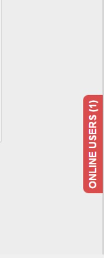
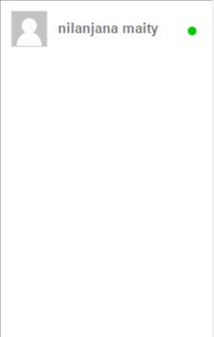
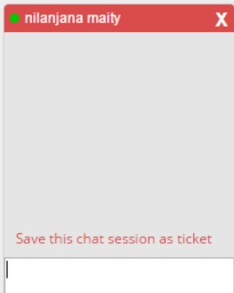
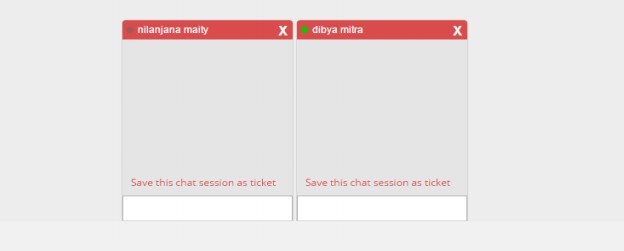

- Once chat module is enabled from the configuration module, it will appear at the right side user frontend as a button.

- On clicking the chat button list of available users to chat with will appear. Online users will be shown with a green symbols whereas offline users will be shown with a gray symbols.

- On clicking the online users a chat window will appear, admin then can start chatting with that user. If the user is offline he will get the chat after login immediately

- Admin can chat with multiple users whereas user can chat with only one admin at a time.

- Admin can also post the chat as ticket by clicking on“Save this chat session as ticket
Created with the Personal Edition of HelpNDoc: Full-featured multi-format Help generator